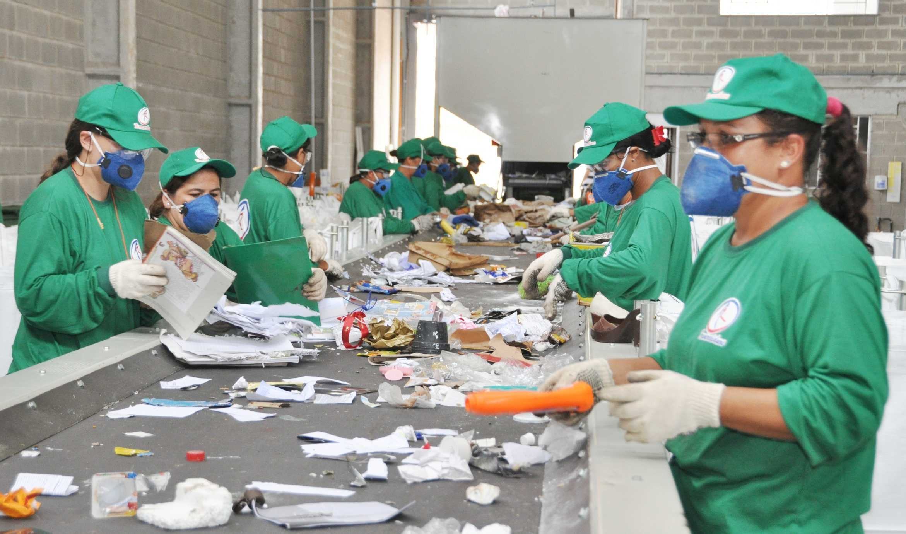
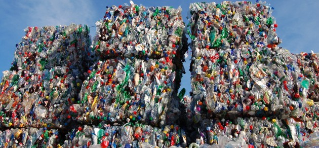

Neste site você encontrará diversas informações sobre sustentabilidade e reciclagem para que você leitor esteja por dentro de tudo que está acontecendo no Brasil e no mundo atualmente. Nos dias de hoje vimos muitas reportagens passando na televisão, saindo nos jornais, nos rádios e na internet sobre o meio ambiente sendo degradado a cada dia, nas ruas nos rios e até mesmo nas industrias poluindo o ar que nós respiramos, imaginem no futuro como será se nós não fizermos a nossa parte, começando dentro de nossa própria casa, por isso estamos aqui para apresentar algumas informações e dicas para que nós e nossos filhos no futuro tenhamos uma vida mais saúdavel e respirando ar puro.
FAÇA SUA PARTE

 